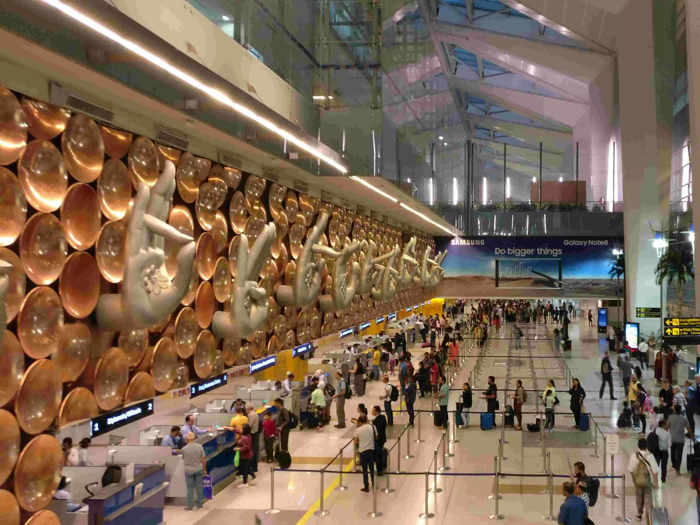

<!DOCTYPE html>
<html>
<head>
    
    <meta http-equiv="content-type" content="text/html; charset=UTF-8" />
    
        <script>
            L_NO_TOUCH = false;
            L_DISABLE_3D = false;
        </script>
    
    <style>html, body {width: 100%;height: 100%;margin: 0;padding: 0;}</style>
    <style>#map {position:absolute;top:0;bottom:0;right:0;left:0;}</style>
    <script src="https://cdn.jsdelivr.net/npm/leaflet@1.9.3/dist/leaflet.js"></script>
    <script src="https://code.jquery.com/jquery-3.7.1.min.js"></script>
    <script src="https://cdn.jsdelivr.net/npm/bootstrap@5.2.2/dist/js/bootstrap.bundle.min.js"></script>
    <script src="https://cdnjs.cloudflare.com/ajax/libs/Leaflet.awesome-markers/2.0.2/leaflet.awesome-markers.js"></script>
    <link rel="stylesheet" href="https://cdn.jsdelivr.net/npm/leaflet@1.9.3/dist/leaflet.css"/>
    <link rel="stylesheet" href="https://cdn.jsdelivr.net/npm/bootstrap@5.2.2/dist/css/bootstrap.min.css"/>
    <link rel="stylesheet" href="https://netdna.bootstrapcdn.com/bootstrap/3.0.0/css/bootstrap-glyphicons.css"/>
    <link rel="stylesheet" href="https://cdn.jsdelivr.net/npm/@fortawesome/fontawesome-free@6.2.0/css/all.min.css"/>
    <link rel="stylesheet" href="https://cdnjs.cloudflare.com/ajax/libs/Leaflet.awesome-markers/2.0.2/leaflet.awesome-markers.css"/>
    <link rel="stylesheet" href="https://cdn.jsdelivr.net/gh/python-visualization/folium/folium/templates/leaflet.awesome.rotate.min.css"/>
    
            <meta name="viewport" content="width=device-width,
                initial-scale=1.0, maximum-scale=1.0, user-scalable=no" />
            <style>
                #map_9d6da591bf83112070fcee8d915ec5c7 {
                    position: relative;
                    width: 100.0%;
                    height: 100.0%;
                    left: 0.0%;
                    top: 0.0%;
                }
                .leaflet-container { font-size: 1rem; }
            </style>
        
</head>
<body>
    
    
            <div class="folium-map" id="map_9d6da591bf83112070fcee8d915ec5c7" ></div>
        
</body>
<script>
    
    
            var map_9d6da591bf83112070fcee8d915ec5c7 = L.map(
                "map_9d6da591bf83112070fcee8d915ec5c7",
                {
                    center: [20.5937, 78.9629],
                    crs: L.CRS.EPSG3857,
                    zoom: 5,
                    zoomControl: true,
                    preferCanvas: false,
                }
            );

            

        
    
            var tile_layer_bbcbc821f186f98f89fc69cf0b6b1ac9 = L.tileLayer(
                "https://tile.openstreetmap.org/{z}/{x}/{y}.png",
                {"attribution": "\u0026copy; \u003ca href=\"https://www.openstreetmap.org/copyright\"\u003eOpenStreetMap\u003c/a\u003e contributors", "detectRetina": false, "maxNativeZoom": 19, "maxZoom": 19, "minZoom": 0, "noWrap": false, "opacity": 1, "subdomains": "abc", "tms": false}
            );
        
    
            tile_layer_bbcbc821f186f98f89fc69cf0b6b1ac9.addTo(map_9d6da591bf83112070fcee8d915ec5c7);
        
    
            var marker_e6c79aa3386c17787ae6534afce7fcb9 = L.marker(
                [28.55683666833814, 77.10145190844422],
                {}
            ).addTo(map_9d6da591bf83112070fcee8d915ec5c7);
        
    
            var icon_5188ef3bdc4e5f3258c8da60191e6cf9 = L.AwesomeMarkers.icon(
                {"extraClasses": "fa-rotate-0", "icon": "plane", "iconColor": "blue", "markerColor": "blue", "prefix": "fa"}
            );
            marker_e6c79aa3386c17787ae6534afce7fcb9.setIcon(icon_5188ef3bdc4e5f3258c8da60191e6cf9);
        
    
        var popup_6e00f32787a6125b7b243e905195075e = L.popup({"maxWidth": "100%"});

        
            
                var html_73375bcf82fd0a5fcb8e1655d232f75b = $(`<div id="html_73375bcf82fd0a5fcb8e1655d232f75b" style="width: 100.0%; height: 100.0%;"><h1>Delhi, Indira Gandhi</h1><p>El Aeropuerto Internacional Indira Gandhi, situado a 16 km del centro de la ciudad de Delhi, es uno de los principales accesos nacionales e internacionales de la India.</p></div>`)[0];
                popup_6e00f32787a6125b7b243e905195075e.setContent(html_73375bcf82fd0a5fcb8e1655d232f75b);
            
        

        marker_e6c79aa3386c17787ae6534afce7fcb9.bindPopup(popup_6e00f32787a6125b7b243e905195075e)
        ;

        
    
    
            marker_e6c79aa3386c17787ae6534afce7fcb9.bindTooltip(
                `<div>
                     Indira Gandhi
                 </div>`,
                {"sticky": true}
            );
        
    
            var marker_7a6a4972b24116bac4fb43be4cac9a87 = L.marker(
                [19.09055784461296, 72.8640514743381],
                {}
            ).addTo(map_9d6da591bf83112070fcee8d915ec5c7);
        
    
            var icon_f8ef95bc9d4acbaaee7b8d90e4f8fcfc = L.AwesomeMarkers.icon(
                {"extraClasses": "fa-rotate-0", "icon": "plane", "iconColor": "blue", "markerColor": "blue", "prefix": "fa"}
            );
            marker_7a6a4972b24116bac4fb43be4cac9a87.setIcon(icon_f8ef95bc9d4acbaaee7b8d90e4f8fcfc);
        
    
        var popup_46d6c2153cfcc7dd5fce809149b9411e = L.popup({"maxWidth": "100%"});

        
            
                var html_a2f19baa5b9d7d16f34cb5c560ee4ffa = $(`<div id="html_a2f19baa5b9d7d16f34cb5c560ee4ffa" style="width: 100.0%; height: 100.0%;"><h1>Mumbai, Chhatrapati Shivaji</h1><p>El Aeropuerto Internacional Chhatrapati Shivaji, anteriormente Aeropuerto Internacional de Sahar, es un aeropuerto de Bombay, en la India.</p></div>`)[0];
                popup_46d6c2153cfcc7dd5fce809149b9411e.setContent(html_a2f19baa5b9d7d16f34cb5c560ee4ffa);
            
        

        marker_7a6a4972b24116bac4fb43be4cac9a87.bindPopup(popup_46d6c2153cfcc7dd5fce809149b9411e)
        ;

        
    
    
            marker_7a6a4972b24116bac4fb43be4cac9a87.bindTooltip(
                `<div>
                     Chhatrapati Shivaji
                 </div>`,
                {"sticky": true}
            );
        
    
            var marker_00e917672bd4d4ec424afe6745665897 = L.marker(
                [13.199676823889089, 77.70876834609997],
                {}
            ).addTo(map_9d6da591bf83112070fcee8d915ec5c7);
        
    
            var icon_d5c613f6e4e6129a3be7653d6979090f = L.AwesomeMarkers.icon(
                {"extraClasses": "fa-rotate-0", "icon": "plane", "iconColor": "blue", "markerColor": "blue", "prefix": "fa"}
            );
            marker_00e917672bd4d4ec424afe6745665897.setIcon(icon_d5c613f6e4e6129a3be7653d6979090f);
        
    
        var popup_ebd5732b9dccdcf8d7167bcd752ad203 = L.popup({"maxWidth": "100%"});

        
            
                var html_523506d43b608f72b8d995695a823c1a = $(`<div id="html_523506d43b608f72b8d995695a823c1a" style="width: 100.0%; height: 100.0%;"><h1>Bangalore, Kempegowda</h1><p>El Aeropuerto Internacional Kempegowda es un aeropuerto que sirve a Bangalore (Bengaluru), Karnataka, India. Se encuentra aproximadamente 40 kilómetros (25 mi) de la ciudad, cerca del pueblo de Devanahalli.</p></div>`)[0];
                popup_ebd5732b9dccdcf8d7167bcd752ad203.setContent(html_523506d43b608f72b8d995695a823c1a);
            
        

        marker_00e917672bd4d4ec424afe6745665897.bindPopup(popup_ebd5732b9dccdcf8d7167bcd752ad203)
        ;

        
    
    
            marker_00e917672bd4d4ec424afe6745665897.bindTooltip(
                `<div>
                     Kempegowda
                 </div>`,
                {"sticky": true}
            );
        
    
            var marker_7f4234f0cc72ee3828fe7ce73a131bf8 = L.marker(
                [22.653752100434122, 88.4457927992844],
                {}
            ).addTo(map_9d6da591bf83112070fcee8d915ec5c7);
        
    
            var icon_8aa28a521a0548c00d8c934cdfa9c2a2 = L.AwesomeMarkers.icon(
                {"extraClasses": "fa-rotate-0", "icon": "plane", "iconColor": "blue", "markerColor": "blue", "prefix": "fa"}
            );
            marker_7f4234f0cc72ee3828fe7ce73a131bf8.setIcon(icon_8aa28a521a0548c00d8c934cdfa9c2a2);
        
    
        var popup_f0534816756f5904d53a038512a99043 = L.popup({"maxWidth": "100%"});

        
            
                var html_e8e71d342d66367a433ed57f2206678f = $(`<div id="html_e8e71d342d66367a433ed57f2206678f" style="width: 100.0%; height: 100.0%;"><h1>Kolkata, Netaji Subhas Chandra Bose</h1><p>El Aeropuerto Internacional Netaji Subash Chandra Bose es un aeropuerto de la India en las cercanías de la ciudad de Calcuta. Es el cuarto aeropuerto más importante de la India.</p></div>`)[0];
                popup_f0534816756f5904d53a038512a99043.setContent(html_e8e71d342d66367a433ed57f2206678f);
            
        

        marker_7f4234f0cc72ee3828fe7ce73a131bf8.bindPopup(popup_f0534816756f5904d53a038512a99043)
        ;

        
    
    
            marker_7f4234f0cc72ee3828fe7ce73a131bf8.bindTooltip(
                `<div>
                     Netaji Subhas Chandra Bose
                 </div>`,
                {"sticky": true}
            );
        
    
            var marker_2d525e7e88216f4f3c5a94c3e39000cb = L.marker(
                [17.240411708991154, 78.42996547954324],
                {}
            ).addTo(map_9d6da591bf83112070fcee8d915ec5c7);
        
    
            var icon_ae60154596e59e54cd1989b96dd66ff2 = L.AwesomeMarkers.icon(
                {"extraClasses": "fa-rotate-0", "icon": "plane", "iconColor": "blue", "markerColor": "blue", "prefix": "fa"}
            );
            marker_2d525e7e88216f4f3c5a94c3e39000cb.setIcon(icon_ae60154596e59e54cd1989b96dd66ff2);
        
    
        var popup_2ec262ccfa30de74d1d63cc0a9a250cb = L.popup({"maxWidth": "100%"});

        
            
                var html_550cccdc3e8e299dca192134d7781941 = $(`<div id="html_550cccdc3e8e299dca192134d7781941" style="width: 100.0%; height: 100.0%;"><h1>Hyderabad, Rajiv Gandhi</h1><p>El Aeropuerto Internacional Rajiv Gandhi es un nuevo aeropuerto cerca de Shamshabad, a unos 22 km de la ciudad de Hyderabad, en India.</p></div>`)[0];
                popup_2ec262ccfa30de74d1d63cc0a9a250cb.setContent(html_550cccdc3e8e299dca192134d7781941);
            
        

        marker_2d525e7e88216f4f3c5a94c3e39000cb.bindPopup(popup_2ec262ccfa30de74d1d63cc0a9a250cb)
        ;

        
    
    
            marker_2d525e7e88216f4f3c5a94c3e39000cb.bindTooltip(
                `<div>
                     Rajiv Gandhi
                 </div>`,
                {"sticky": true}
            );
        
    
            var marker_ff79a1dd680bee9d770265cf598b99d4 = L.marker(
                [12.994792795088543, 80.1724829030673],
                {}
            ).addTo(map_9d6da591bf83112070fcee8d915ec5c7);
        
    
            var icon_8468b51d1bf325af5b8fcf8217a80a44 = L.AwesomeMarkers.icon(
                {"extraClasses": "fa-rotate-0", "icon": "plane", "iconColor": "blue", "markerColor": "blue", "prefix": "fa"}
            );
            marker_ff79a1dd680bee9d770265cf598b99d4.setIcon(icon_8468b51d1bf325af5b8fcf8217a80a44);
        
    
        var popup_6ab85e0eea06dbbc9a860542aaa52fa6 = L.popup({"maxWidth": "100%"});

        
            
                var html_a5e9821d90448078ee38ed7d52833497 = $(`<div id="html_a5e9821d90448078ee38ed7d52833497" style="width: 100.0%; height: 100.0%;"><h1>Chennai, Chennai</h1><p>El Aeropuerto Internacional de Chennai se encuentra en Meenambakkam, 7 km al sur de Madrás, India. Es la tercera mayor puerta de entrada internacional del país</p></div>`)[0];
                popup_6ab85e0eea06dbbc9a860542aaa52fa6.setContent(html_a5e9821d90448078ee38ed7d52833497);
            
        

        marker_ff79a1dd680bee9d770265cf598b99d4.bindPopup(popup_6ab85e0eea06dbbc9a860542aaa52fa6)
        ;

        
    
    
            marker_ff79a1dd680bee9d770265cf598b99d4.bindTooltip(
                `<div>
                     Chennai
                 </div>`,
                {"sticky": true}
            );
        
</script>
</html>